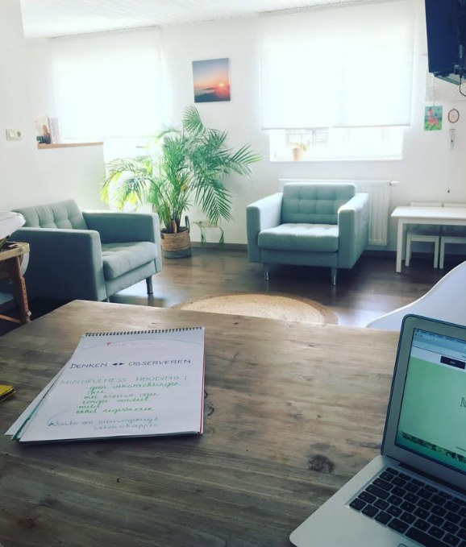

Body & mind
In de begeleiding krijgen lichaam en hoofd allebei aandacht. Want stress zit niet alleen in je hoofd, en ook niet alleen in je lijf. Daarom combineer ik stressmanagement, mindfulness en ACT.
Het venster van verdraagzaamheid
Om uit te leggen wat stress met je doet, gebruik ik het venster van verdraagzaamheid (window of tolerance). Je zenuwstelsel kent drie toestanden:
Het is normaal om af en toe uit je venster te gaan. Het wordt pas een probleem als je er weken of maanden buiten blijft. In de begeleiding werken we eraan om je venster groter te maken. Dat doen we langs twee kanten: via je lichaam en via je hoofd.
Het lichamelijke luik
In het lichamelijke luik ontdekken we samen welke technieken het best helpen om je zenuwstelsel tot rust te brengen.
We maken gebruik van ademhalings-, relaxatie- en mindfulnessmethoden, en bekijken hoe beweging op een natuurlijke manier in je dagelijks leven kan worden geïntegreerd.
Een belangrijk onderdeel is het leren herkennen van de verschillende toestanden van je zenuwstelsel: bevind je je in rust, of is je vecht- of vluchtreactie geactiveerd — en in welke mate?
Door hier bewust van te worden, leer je luisteren naar de signalen van je lichaam en beter begrijpen wat het nodig heeft om opnieuw in balans te komen én te blijven.
Het mentale luik
Ons innerlijk stresssysteem kan geactiveerd worden door factoren van buitenaf maar ook van binnenuit, door onze eigen manier van denken of door onze eigen manier van omgaan met bepaalde situaties. Deze stress kunnen we voor een stuk verminderen door onze eigen denkprocessen te leren kennen, te leren wat ons triggert en waarom. Door inzichten te vergaren en gedragingen bij te sturen kunnen we onszelf een stuk weerbaarder maken.
Hierbij wordt onder andere gebruik gemaakt van ACT (acceptance & commitment therapy). Zoals de naam zelf al zegt, gaat het vooral om wat we niet kunnen veranderen, te leren aanvaarden zoals het is.
ACT hanteert 6 kernprincipes waar we ons in gaan verdiepen. Hoe meer we deze principes eigen worden, hoe flexibeler ons brein wordt en hoe makkelijker het loslaten en handelen wordt. Thema’s die vaak besproken worden zijn:
- grenzen en assertiviteit
- perfectionisme en faalangst
- controledrang
- onzekerheid
- hoogsensitiviteit
- relatiedynamieken
- …
Hoe gaat dat in de praktijk?
In de rustige praktijkruimte in Alken nemen we de tijd voor jouw verhaal. Er is ruimte om te praten, om te oefenen en om even stil te staan. Een begeleiding verloopt meestal in deze stappen.

Kennismaking en intake
In de eerste sessie vertel jij wat je klachten zijn, waar je denkt dat de stress vandaan komt en wat je van de begeleiding verwacht. Ik leg uit hoe stress werkt in je lichaam en in je hoofd. Op het einde beslis jij of je verder wilt gaan.
Je energiebalans
We brengen in kaart wat je rust geeft, wat je energie geeft en wat je energie kost. Rustgevers schrappen we vaak als eerste als het druk wordt, terwijl die net moeten blijven.
Lichaam en hoofd samen
In dezelfde sessies werken we aan allebei: oefeningen die je zenuwstelsel kalmeren, en inzicht in wat de stress van binnenuit aanwakkert. Vaak komt er tijdens het lichaamswerk al veel naar boven.
Oefenen in je dagelijks leven
Wat je in de sessies leert, oefen je thuis. Zo gaat het echt deel uitmaken van je leven. We beginnen klein, en de moeilijkere stappen komen later.
Er is geen vast aantal sessies. Sommige mensen gaan na vier of vijf sessies al goed vooruit, anderen hebben meer tijd nodig. Dat hangt af van wat je meebrengt en hoeveel je thuis oefent. We stemmen dat samen af.